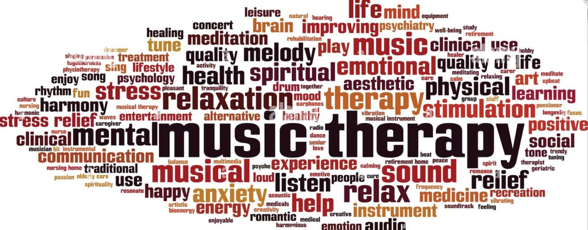
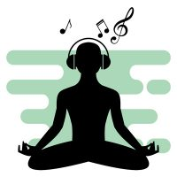

<!html>
<html>
  <head>
  </html>

  <body style="background-color:white">
  <div style="border:1px solid black;padding:30px;margin:20px auto;background-color:orange;width:1000px;">
  
  <h1 align="middle" style="color:red":>Music Therapy</h1>
  <h2 style="color:green">What Is Music Therapy</h2>
  <p>Music therapy is a therapeutic approach that uses the naturally mood-lifting properties of music to help people improve their mental health and overall well-being.
  It’s a goal-oriented intervention that may involve </P>
  
  <ul>
  <li>Making music</li>
  <li>Writing songs</li>
  <li>Singing</li>
  <li>Lisening to music</li>
  <li>Discussing music</li>
  </ul>
 <p align="left"></p>
  <p>This form of treatment may be helpful for people with depression and anxiety, and it may help improve the quality of life for people with physical health problems. Anyone can engage in music therapy; you don’t need a background in music to experience its beneficial effects.</p>

<h2 style="color:green">Types of Music Theropy</h2>
  <p>Music therapy can be an active process, where clients play a role in creating music, or a passive one that involves listening or responding to music. Some therapists may use a combined approach that involves both active and passive interactions with music.

There are a variety of approaches established in music therapy, including.</p>
 <p align="left"></p>
<ul>
  <li>Analytical music therapy encourages you to use an improvised, musical "dialogue" through singing or playing an instrument to express your unconscious thoughts, which you can reflect on and discuss with your therapist afterward.</li>
  <li>Benenzon music therapy This format combines some concepts of psychoanalysis with the process of making music. Benenzon music therapy includes the search for your "musical sound identity," which describes the external sounds that most closely match your internal psychological state.</li>
  <li>Cognitive behavioral music therapy (CBMT): This approach combines cognitive behavioral therapy (CBT) with music. In CBMT, music is used to reinforce some behaviors and modify others. This approach is structured, not improvisational, and may include listening to music, dancing, singing, or playing an instrument.</li>
  <li>Vocal psychotherapy: In this format, you use various vocal exercises, natural sounds, and breathing techniques to connect with your emotions and impulses. This practice is meant to create a deeper sense of connection with yourself.</li>
  <li>Community music therapy This format is focused on using music as a way to facilitate change on the community level. It’s done in a group setting and requires a high level of engagement from each member</li>
  </ul>
  <h2 style="color:green">What Music Therapy Can Help with</h2>
   <p align="left"></p>
  <ul>
  <li>Depression</li>
  <li>Feeling low</li>
  <li>Anxiety/stress</li>
  <li>Headaches</li>
  <li>Negative mood</li>
  </ul>
  <h3 style="color:green">Music therapy is also often used to help children and adolescents</h3>
   <p align="left"></p>
  <ul>
  <li>Develop their identities</li>
  <li>Improve their communication skills</li>
  <li>Learn to regulate their emotions</li>
  <li>Recover from trauma</li>
  <li>Self-reflect</li>
  </ul>
 <h2 style="color:green">Benefits of Music Therapy</h2> 
 <p>Music therapy can be highly personalized, making it suitable for people of any age—even very young children can benefit. It’s also versatile and offers benefits for people with a variety of musical experience levels and with different mental or physical health challenges</p>
 <ul>
 Engaging with music can
 <li>Activate regions of the brain that influence things like memory, emotions, movement, sensory relay, some involuntary functions, decision-making, and reward</li>
 <li>Fulfill social needs for older adults in group settings</li>
 <li>Lower heart rate and blood pressure</li>
  <li>Relax muscle tension</li>
 <li>Release endorphins13</li>
<li>Relieve stress and encourage feelings of calm</li>
 <li>Strengthen motor skills and improve communication for children and young adults who have developmental and/or learning disabilities</li>
<h2 style="color:green">Effectiveness</h2>
<p>The uses and benefits of music therapy have been researched for decades. Key findings from clinical studies have shown that music therapy may be helpful for people with depression and anxiety, sleep disorders, and even cancer.</P>
<h2 style="color:green">Depression</h2>
 <p align="left"></p>
<p>Studies have shown that music therapy can be an effective component of depression treatment.16 According to the research cited, the use of music therapy was most beneficial to people with depression when it was combined with the usual treatments (such as antidepressants and psychotherapy)
When used in combination with other forms of treatment, music therapy may also help reduce obsessive thoughts, depression, and anxiety in people with OCD<p>
<h2 style="color:green">Isnomia</h2>
<p>Many people find that music, or even white noise, helps them fall asleep.

 Research has shown that music therapy may be helpful for people with sleep disorders or insomnia as a symptom of depression.</br>

Compared to pharmaceuticals and other commonly prescribed treatments for sleep disorders, music is less invasive, more affordable, and something a person can do on their own to self-manage their condition.</P>       
  </div>
  </body>
  </html>